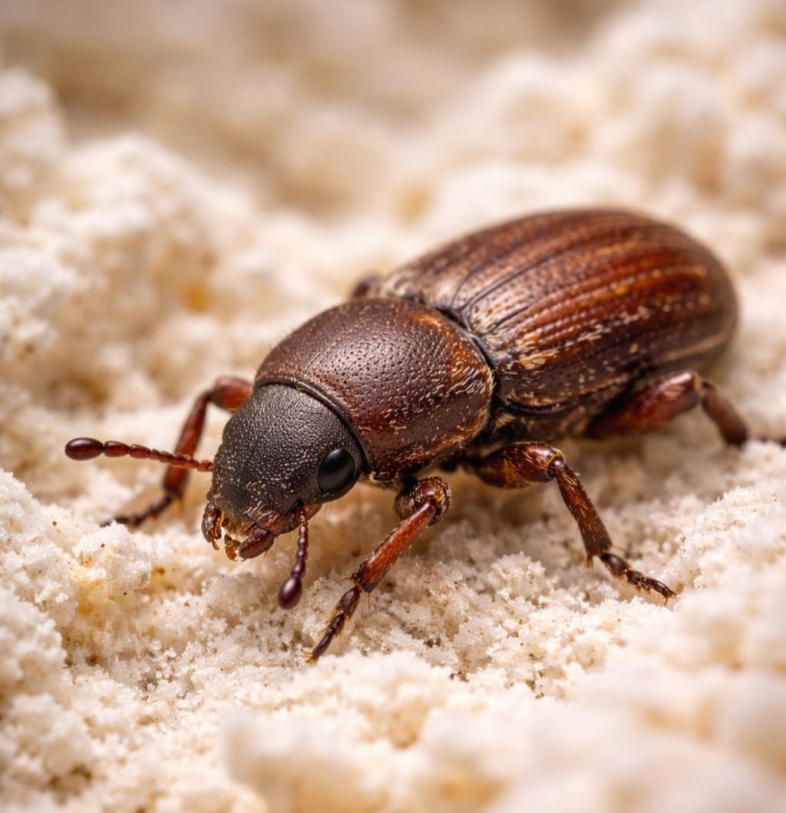

Gorgojo de Harina

Descripción
Bajo el nombre “gorgojo de harina” muchas personas se refieren a plagas de alimentos
almacenados que atacan productos secos como harina, cereales, pasta, galletas
y alimentos para mascotas.
Riesgos y problemas
- Contaminación de alimentos (residuos, polvillo, presencia de insectos).
- Mal olor o sabor en productos almacenados.
- Infestaciones persistentes si quedan focos escondidos.
Señales de infestación
- Insectos pequeños en estantes o cerca de empaques.
- “Polvo” o residuos finos en esquinas de gabinetes.
- Actividad repetida aunque se boten algunos productos (indica foco oculto).
Prevención
- Guardar harinas y cereales en recipientes herméticos.
- No mezclar producto nuevo con producto viejo.
- Limpiar gabinetes con regularidad (especialmente esquinas y bisagras).
- Revisar alimento de mascotas: es una fuente común.
Control profesional
El control efectivo requiere identificar el origen (producto afectado), saneamiento profundo,
y manejo del entorno para romper el ciclo. En Bugs Or Us PR realizamos inspección,
orientación preventiva y tratamiento dirigido cuando se requiere, con enfoque seguro y responsable.
Solicitar Servicio Profesional
← Volver al Inicio